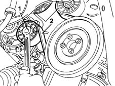
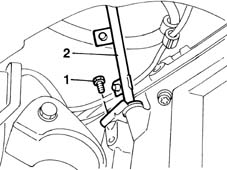
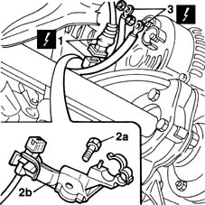
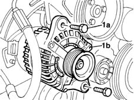
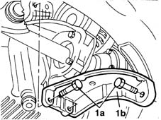
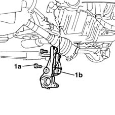

2710A34 intermediate drive shaft bearing support - r + r with intermediate drive shaft removed for versions with air conditioner
- Path
- Procedures > 27 AXLE > 2710 FRONT AXLE > 2710A drive shafts and joints > 2710A34 intermediate drive shaft bearing support - r + r with intermediate drive shaft removed for versions with air conditioner
- Kind
- repair procedure (removal / refitting; the operation number is the code)
- Applies to
- engines: 1.9 JTD 8V; all production periods
- Interactive page
- https://sloeber94.github.io/elrnDB-fMltpl/en/#/2891565
Applies to: engines: 1.9 JTD 8V; all production periods
 Removing
Removing
 Refitting
Refitting1048A10 AIR CLEANER FILTERING ELEMENT - REPLACE
1016A10 sound-proofing cover - r + r
1080D34 engine oil vapour separator - r + r
1. Using the belt tensioner, slacken the tension of the single drive belt.
2. Remove the belt from the pullies.

Applies to: engines: 1.9 JTD 8V; all production periods
1. Undo the lower bolt of the engine oil dipstick.
2. Remove the engine oil dipstick.

Applies to: engines: 1.9 JTD 8V; all production periods
1. Disconnect the electrical connection for the rpm sensor.
 | Name | Connector |
|---|---|---|
1 | RPM sensor |
2. Undo the retaining bolt (2a) and remove the electrical wiring mounting bracket (2b).
3. Disconnect the alternator's electrical wiring.
| Name | Connector |
|---|---|---|
3 | Alternator |

Applies to: engines: 1.9 JTD 8V; all production periods
1. Undo the two fixing bolts.
2. Remove the alternator, withdrawing it from the top of the engine compartment.

Applies to: engines: 1.9 JTD 8V; all production periods
1. Undo the two fixing bolts (1a) and remove the alternator mounting bracket (1b).

Applies to: engines: 1.9 JTD 8V; all production periods
1. Undo the fixing bolts (1a) and remove the intermediate shaft mounting (1b).

Applies to: engines: 1.9 JTD 8V; all production periods
Refitting
RemovingPosition the shaft mounting in its seating.
Tighten the bolts securing the intermediate shaft mounting.
 | Fastening | Component | Ø | Value (daNm) |
|---|---|---|---|---|
- | Bolt | FRONT DRIVE SHAFT BEARING MOUNT | M10 | 7 |
Fit the alternator mounting bracket and tighten the two fixing bolts.
| Fastening | Component | Ø | Value (daNm) |
|---|---|---|---|---|
- | Bolt | FRONT ALTERNATOR SUPPORT | M8 | 2.5 |
Fit the alternator and screw the fixing bolts onto the mounting.
| Fastening | Component | Ø | Value (daNm) |
|---|---|---|---|---|
- | Nut | ALTERNATOR ASSEMBLY | M10 | 5 |
| Fastening | Component | Ø | Value (daNm) |
|---|---|---|---|---|
- | Nut | ALTERNATOR ASSEMBLY | M12 | 7 |
Connect the alternator's electrical wiring.
| Name | Connector |
|---|---|---|
- | Alternator |
Fit the electrical wiring securing bracket and fix it to the cylinder block with its bolt.
Connect the electrical connection for the rpm sensor.
| Name | Connector |
|---|---|---|
- | RPM sensor |
Fit the oil dipstick and tighten the bottom retaining bolt.
Adjust the belt tensioner to fit the single drive belt.
1080D34 engine oil vapour separator - r + r
Topics linked from this page (6)
- 1016A10 sound-proofing cover - r + r
- 1048A10 AIR CLEANER FILTERING ELEMENT - REPLACE
- 1080D34 engine oil vapour separator - r + r
- 5530B10 battery - r+r
- A10 Alternator
- K46 RPM sensor